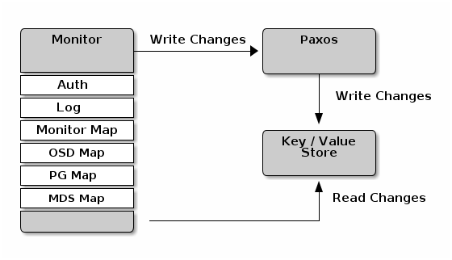
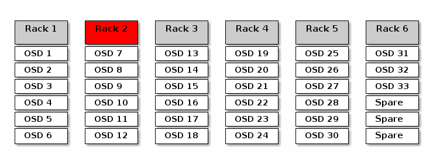
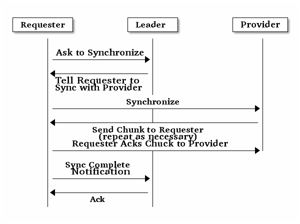

监视器配置参考¶
理解如何配置 Ceph 监视器是构建可靠的 Ceph 存储集群的重要方面，任何 Ceph 集群都需要至少一个监视器。一个监视器通常相当一致，但是你可以增加、删除、或替换集群中的监视器，详情见增加/删除监视器和增加/删除监视器（ ceph-deploy ） 。
背景¶
监视器们维护着集群运行图的“主副本”，就是说客户端连到一个监视器并获取当前运行图就能确定所有监视器、 OSD 和元数据服务器的位置。 Ceph 客户端读写 OSD 或元数据服务器前，必须先连到一个监视器，靠当前集群运行图的副本和 CRUSH 算法，客户端能计算出任何对象的位置，故此客户端有能力直接连到 OSD ，这对 Ceph 的高伸缩性、高性能来说非常重要。更多信息见伸缩性和高可用性。
监视器的主要角色是维护集群运行图的主副本，它也提供认证和日志记录服务。 Ceph 监视器们把监视器服务的所有更改写入一个单独的 Paxos 例程，然后 Paxos 以键/值方式存储所有变更以实现高度一致性。同步期间， Ceph 监视器能查询集群运行图的近期版本，它们通过操作键/值存储快照和迭代器（用 leveldb ）来进行存储级同步。

Deprecated since version 0.58: 版
在 0.58 及更早版本中， Ceph 监视器每个服务用一个 Paxos 例程，并把运行图存储为文件。
集群运行图¶
集群运行图是多个图的组合，包括监视器图、 OSD 图、归置组图和元数据服务器图。集群运行图追踪几个重要事件：哪些进程在集群里（ in ）；哪些进程在集群里（ in ）是 up 且在运行、或 down ；归置组状态是 active 或 inactive 、 clean 或其他状态；和其他反映当前集群状态的信息，像总存储容量、和使用量。
当集群状态有明显变更时，如一 OSD 挂了、一归置组降级了等等，集群运行图会被更新以反映集群当前状态。另外，监视器也维护着集群的主要状态历史。监视器图、 OSD 图、归置组图和元数据服务器图各自维护着它们的运行图版本。我们把各图的版本称为一个 epoch 。
运营集群时，跟踪这些状态是系统管理任务的重要部分。详情见监控集群和监控 OSD 和归置组。
监视器法定人数¶
本文入门部分提供了一个简陋的 Ceph 配置文件，它提供了一个监视器用于测试。只用一个监视器集群可以良好地运行，然而单监视器是一个单故障点，生产集群要实现高可用性的话得配置多个监视器，这样单个监视器的失效才不会影响整个集群。
集群用多个监视器实现高可用性时，多个监视器用 Paxos 算法对主集群运行图达成一致，这里的一致要求大多数监视器都在运行且够成法定人数（如 1 个、 3 之 2 在运行、 5 之 3 、 6 之 4 等等）。
一致性¶
你把监视器加进 Ceph 配置文件时，得注意一些架构问题， Ceph 发现集群内的其他监视器时对其有着严格的一致性要求。尽管如此， Ceph 客户端和其他 Ceph 守护进程用配置文件发现监视器，监视器却用监视器图（ monmap ）相互发现而非配置文件。
一个监视器发现集群内的其他监视器时总是参考 monmap 的本地副本，用 monmap 而非 Ceph 配置文件避免了可能损坏集群的错误（如 ceph.conf 中指定地址或端口的拼写错误）。正因为监视器把 monmap 用于发现、并共享于客户端和其他 Ceph 守护进程间， monmap可严格地保证监视器的一致性是可靠的。
严格的一致性也适用于 monmap 的更新，因为关于监视器的任何更新、关于 monmap 的变更都是通过称为 Paxos 的分布式一致性算法传递的。监视器们必须就 monmap 的每次更新达成一致，以确保法定人数里的每个监视器 monmap 版本相同，如增加、删除一个监视器。 monmap 的更新是增量的，所以监视器们都有最新的一致版本，以及一系列之前版本。历史版本的存在允许一个落后的监视器跟上集群当前状态。
如果监视器通过配置文件而非 monmap 相互发现，这会引进其他风险，因为 Ceph 配置文件不是自动更新并分发的，监视器有可能不小心用了较老的配置文件，以致于不认识某监视器、放弃法定人数、或者产生一种 Paxos 不能确定当前系统状态的情形。
初始化监视器¶
在大多数配置和部署案例中，部署 Ceph 的工具可以帮你生成一个监视器图来初始化监视器（如 ceph-deploy 等），一个监视器需要 4 个选项：
- 文件系统标识符： fsid 是对象存储的唯一标识符。因为你可以在一套硬件上运行多个集群，所以在初始化监视器时必须指定对象存储的唯一标识符。部署工具通常可替你完成（如 ceph-deploy 会调用类似 uuidgen 的程序），但是你也可以手动指定 fsid 。
- 监视器标识符： 监视器标识符是分配给集群内各监视器的唯一 ID ，它是一个字母数字组合，为方便起见，标识符通常以字母顺序结尾（如 a 、 b 等等），可以设置于 Ceph 配置文件（如 [mon.a] 、 [mon.b] 等等）、部署工具、或 ceph 命令行工具。
- 密钥： 监视器必须有密钥。像 ceph-deploy 这样的部署工具通常会自动生成，也可以手动完成。见监视器密钥环。
关于初始化的具体信息见初始化监视器。
监视器的配置¶
要把配置应用到整个集群，把它们放到 [global] 下；要用于所有监视器，置于 [mon] 下；要用于某监视器，指定监视器例程，如 [mon.a] ）。按惯例，监视器例程用字母命名。
[global]
[mon]
[mon.a]
[mon.b]
[mon.c]
最小配置¶
Ceph 监视器的最简配置必须包括一主机名及其监视器地址，这些配置可置于 [mon] 下或某个监视器下。
[mon]
mon host = hostname1,hostname2,hostname3
mon addr = 10.0.0.10:6789,10.0.0.11:6789,10.0.0.12:6789
[mon.a]
host = hostname1
mon addr = 10.0.0.10:6789
详情见网络配置参考。
Note
这里的监视器最简配置假设部署工具会自动给你生成 fsid 和 mon. 密钥。
一旦部署了 Ceph 集群，监视器 IP 地址不应该更改。然而，如果你决意要改，必须严格按照更改监视器 IP 地址来改。
集群 ID¶
每个 Ceph 存储集群都有一个唯一标识符（ fsid ）。如果指定了，它应该出现在配置文件的 [global] 段下。部署工具通常会生成 fsid 并存于监视器图，所以不一定会写入配置文件， fsid 使得在一套硬件上运行多个集群成为可能。
fsid
| 描述: | 集群 ID ，一集群一个。 |
|---|---|
| 类型: | UUID |
| 是否必需: | Yes. |
| 默认值: | 无。若未指定，部署工具会生成。 |
Note
如果你用部署工具就不能设置。
初始成员¶
我们建议在生产环境下最少部署 3 个监视器，以确保高可用性。运行多个监视器时，你可以指定为形成法定人数成员所需的初始监视器，这能减小集群上线时间。
[mon]
mon initial members = a,b,c
mon initial members
| 描述: | 集群启动时初始监视器的 ID ，若指定， Ceph 需要奇数个监视器来确定最初法定人数（如 3 ）。 |
|---|---|
| 类型: | String |
| 默认值: | None |
Note
集群内的大多数监视器必须能互通以建立法定人数，你可以用此选项减小初始监视器数量来形成。
数据¶
Ceph 监视器有存储数据的默认路径，生产集群为实现更高性能可把监视器部署到非 OSD 节点的独立主机上。因为监视器会频繁 fsync() ，这可能影响 OSD 。
在 Ceph 0.58 及更早版本中，监视器数据以文件保存，这样人们可以用 ls 和 cat 这些普通工具检查监视器数据，然而它不能提供健壮的一致性。
在 Ceph 0.59 及后续版本中，监视器以键/值对存储数据。监视器需要 ACID 事务，数据存储的使用可防止监视器用损坏的版本进行恢复，除此之外，它允许在一个原子批量操作中进行多个修改操作。
一般来说我们不建议更改默认数据位置，如果要改，我们建议所有监视器统一配置，加到配置文件的 [mon] 下。
mon data
| 描述: | 监视器的数据位置。 |
|---|---|
| 类型: | String |
| 默认值: | /var/lib/ceph/mon/$cluster-$id |
存储容量¶
Ceph 存储集群利用率接近最大容量时（即 mon osd full ratio ），作为防止数据丢失的安全措施，它会阻止你读写 OSD 。因此，让生产集群用满可不是好事，因为牺牲了高可用性。 full ratio 默认值是 .95 或容量的 95% 。对小型测试集群来说这是非常激进的设置。
Tip
监控集群时，要警惕和 nearfull 相关的警告。这意味着一些 OSD 的失败会导致临时服务中断，应该增加一些 OSD 来扩展存储容量。
在测试集群时，一个常见场景是：系统管理员从集群删除一个 OSD 、接着观察重均衡；然后继续删除其他 OSD ，直到集群达到占满率并锁死。我们建议，即使在测试集群里也要规划一点空闲容量用于保证高可用性。理想情况下，要做好这样的预案：一系列 OSD 失败后，短时间内不更换它们仍能恢复到 active + clean 状态。你也可以在 active + degraded 状态运行集群，但对正常使用来说并不好。
下图描述了一个简化的 Ceph 集群，它包含 33 个节点、每主机一个 OSD 、每 OSD 3TB 容量，所以这个小白鼠集群有 99TB 的实际容量，其 mon osd full ratio 为 .95 。如果它只剩余 5TB 容量，集群就不允许客户端再读写数据，所以它的运行容量是 95TB ，而非 99TB 。

在这样的集群里，坏一或两个 OSD 很平常；一种罕见但可能发生的情形是一个机架的路由器或电源挂了，这会导致多个 OSD 同时离线（如 OSD 7-12 ），在这种情况下，你仍要力争保持集群可运行并达到 active + clean 状态，即使这意味着你得在短期内额外增加一些 OSD 及主机。如果集群利用率太高，在解决故障域期间也许不会丢数据，但很可能牺牲数据可用性，因为利用率超过了 full ratio 。故此，我们建议至少要粗略地规划下容量。
找出你集群的两个数字：
- OSD 数量。
- 集群总容量。
用集群里 OSD 总数除以集群总容量，就能得到 OSD 平均容量；如果按预计的 OSD 数乘以这个值所得的结果计算（偏小），实际应用时将出错；最后再用集群容量乘以占满率能得到最大运行容量，然后扣除预估的 OSD 失败率；用较高的失败率（如整机架的 OSD ）重复前述过程看是否接近占满率。
[global]
mon osd full ratio = .80
mon osd nearfull ratio = .70
mon osd full ratio
| 描述: | OSD 硬盘使用率达到多少就认为它 full 。 |
|---|---|
| 类型: | Float |
| 默认值: | .95 |
mon osd nearfull ratio
| 描述: | OSD 硬盘使用率达到多少就认为它 nearfull 。 |
|---|---|
| 类型: | Float |
| 默认值: | .85 |
Tip
如果一些 OSD 快满了，但其他的仍有足够空间，你可能配错 CRUSH 权重了。
心跳¶
Ceph 监视器要求各 OSD 向它报告、并接收 OSD 们的邻居状态报告，以此来掌握集群。 Ceph 提供了监视器与 OSD 交互的合理默认值，然而你可以按需修改，详情见监视器与 OSD 的交互。
监视器存储同步¶
当你用多个监视器支撑一个生产集群时，各监视器都要检查邻居是否有集群运行图的最新版本（如，邻居监视器的图有一或多个 epoch 版本高于当前监视器的最高版 epoch ），过一段时间，集群里的某个监视器可能落后于其它监视器太多而不得不离开法定人数，然后同步到集群当前状态，并重回法定人数。为了同步，监视器可能承担三种中的一种角色：
- Leader: Leader 是实现最新 Paxos 版本的第一个监视器。
- Provider: Provider 有最新集群运行图的监视器，但不是第一个实现最新版。
- Requester: Requester 落后于 leader ，重回法定人数前，必须同步以获取关于集群的最新信息。
有了这些角色区分， leader就 可以给 provider 委派同步任务，这会避免同步请求压垮 leader 、影响性能。在下面的图示中， requester 已经知道它落后于其它监视器，然后向 leader 请求同步， leader 让它去和 provider 同步。

新监视器加入集群时有必要进行同步。在运行中，监视器会不定时收到集群运行图的更新，这就意味着 leader 和 provider 角色可能在监视器间变幻。如果这事发生在同步期间（如 provider 落后于 leader ）， provider 能终结和 requester 间的同步。
一旦同步完成， Ceph 需要修复整个集群，使归置组回到 active + clean 状态。
mon sync trim timeout
| 描述: | |
|---|---|
| 类型: | Double |
| 默认值: | 30.0 |
mon sync heartbeat timeout
| 描述: | |
|---|---|
| 类型: | Double |
| 默认值: | 30.0 |
mon sync heartbeat interval
| 描述: | |
|---|---|
| 类型: | Double |
| 默认值: | 5.0 |
mon sync backoff timeout
| 描述: | |
|---|---|
| 类型: | Double |
| 默认值: | 30.0 |
mon sync timeout
| 描述: | |
|---|---|
| 类型: | Double |
| 默认值: | 30.0 |
mon sync max retries
| 描述: | |
|---|---|
| 类型: | Integer |
| 默认值: | 5 |
mon sync max payload size
| 描述: | 同步载荷的最大尺寸。 |
|---|---|
| 类型: | 32-bit Integer |
| 默认值: | 1045676 |
mon accept timeout
| 描述: | leader 等待 requester(s) 接受 PAXOS 更新的时间，出于同样的目的此值也用于 PAXOS 恢复阶段。 |
|---|---|
| 类型: | Float |
| 默认值: | 10.0 |
paxos propose interval
| 描述: | 提议更新之前收集本时间段的更新。 |
|---|---|
| 类型: | Double |
| 默认值: | 1.0 |
paxos min wait
| 描述: | 经过一段不活跃时间后，收集更新的最小等待时间。 |
|---|---|
| 类型: | Double |
| 默认值: | 0.05 |
paxos trim tolerance
| 描述: | 修复前容忍的其他提议数量。 |
|---|---|
| 类型: | Integer |
| 默认值: | 30 |
paxos trim disabled max versions
| 描述: | 允许不修复就通过的最大版本数。 |
|---|---|
| 类型: | Integer |
| 默认值: | 100 |
mon lease
| 描述: | 监视器版本租期（秒）。 |
|---|---|
| 类型: | Float |
| 默认值: | 5 |
mon lease renew interval
| 描述: | 监视器 leader （头领）刷新其他监视器租期的间隔。 |
|---|---|
| 类型: | Float |
| 默认值: | 3 |
mon lease ack timeout
| 描述: | leader 在等到 providers （随从）确认延长租期前等待的时间。 |
|---|---|
| 类型: | Float |
| 默认值: | 10.0 |
mon min osdmap epochs
| 描述: | 一直保存的 OSD 图元素最小数量。 |
|---|---|
| 类型: | 32-bit Integer |
| 默认值: | 500 |
mon max pgmap epochs
| 描述: | 监视器应该一直保存的 PG 图元素最大数量。 |
|---|---|
| 类型: | 32-bit Integer |
| 默认值: | 500 |
mon max log epochs
| 描述: | 监视器应该保留的最大日志数量。 |
|---|---|
| 类型: | 32-bit Integer |
| 默认值: | 500 |
Slurp¶
在 Ceph 0.58 及之前版本中，当 Paxos 服务偏差的版本数大于某值时，就会触发 slurp 机制，它会和法定人数 leader 建立一个连接并获取 leader 拥有的每个版本，以同步每个有偏差的服务。 Ceph 0.59 及后续版本的 slurp 机制取消了，因为所有服务共享一个 Paxos 例程。
Deprecated since version 0.58.
paxos max join drift
| 描述: | 在我们首次同步监视器数据存储前， Paxos 迭代的最大数量。 |
|---|---|
| 类型: | Integer |
| 默认值: | 10 |
mon slurp timeout
| 描述: | 监视器进程终止后、自举前，要等待多长时间才开始发出显式修复通告。 |
|---|---|
| 类型: | Double |
| 默认值: | 10.0 |
mon slurp bytes
| 描述: | 显式修复消息尺寸限制。 |
|---|---|
| 类型: | 32-bit Integer |
| 默认值: | 256 * 1024 |
时钟¶
Ceph 的守护进程会相互传递关键消息，这些消息必须在达到超时阀值前处理掉。如果 Ceph 监视器时钟不同步，就可能出现多种异常情况。例如：
- 守护进程忽略了收到的消息（如时间戳过时了）
- 消息未及时收到时，超时触发得太快或太晚。
Tip
你应该在所有监视器主机上安装 NTP 以确保监视器集群的时钟同步。
时钟漂移即使尚未造成损坏也能被 NTP 感知， Ceph 的时钟漂移或时钟偏差警告即使在 NTP 同步水平合理时也会被触发。提高时钟漂移值有时候尚可容忍，然而很多因素（像载荷、网络延时、覆盖默认超时值和监视器存储同步选项）都能在不降低 Paxos 保证级别的情况下影响可接受的时钟漂移水平。
Ceph 提供了下列这些可调选项，让你自己琢磨可接受的值。
clock offset
| 描述: | 时钟可以漂移多少，详情见 Clock.cc 。 |
|---|---|
| 类型: | Double |
| 默认值: | 0 |
Deprecated since version 0.58.
mon tick interval
| 描述: | 监视器的心跳间隔，单位为秒。 |
|---|---|
| 类型: | 32-bit Integer |
| 默认值: | 5 |
mon clock drift allowed
| 描述: | 监视器间允许的时钟漂移量 |
|---|---|
| 类型: | Float |
| 默认值: | .050 |
mon clock drift warn backoff
| 描述: | 时钟偏移警告的退避指数。 |
|---|---|
| 类型: | Float |
| 默认值: | 5 |
mon timecheck interval
| 描述: | 和 leader 的时间偏移检查（时钟漂移检查）。单位为秒。 |
|---|---|
| 类型: | Float |
| 默认值: | 300.0 |
客户端¶
mon client hung interval
| 描述: | 客户端每 N 秒尝试一个新监视器，直到它建立连接。 |
|---|---|
| 类型: | Double |
| 默认值: | 3.0 |
mon client ping interval
| 描述: | 客户端每 N 秒 ping 一次监视器。 |
|---|---|
| 类型: | Double |
| 默认值: | 10.0 |
mon client max log entries per message
| 描述: | 某监视器为每客户端生成的最大日志条数。 |
|---|---|
| 类型: | Integer |
| 默认值: | 1000 |
mon client bytes
| 描述: | 内存中允许存留的客户端消息数量（字节数）。 |
|---|---|
| 类型: | 64-bit Integer Unsigned |
| 默认值: | 100ul << 20 |
杂项¶
mon max osd
| 描述: | 集群允许的最大 OSD 数量。 |
|---|---|
| 类型: | 32-bit Integer |
| 默认值: | 10000 |
mon globalid prealloc
| 描述: | 为集群预分配的全局 ID 数量。 |
|---|---|
| 类型: | 32-bit Integer |
| 默认值: | 100 |
mon sync fs threshold
| 描述: | 数量达到设定值时和文件系统同步， 0 为禁用。 |
|---|---|
| 类型: | 32-bit Integer |
| 默认值: | 5 |
mon subscribe interval
| 描述: | 同步的刷新间隔（秒），同步机制允许获取集群运行图和日志信息。 |
|---|---|
| 类型: | Double |
| 默认值: | 300 |
mon stat smooth intervals
| 描述: | Ceph 将平滑最后 N 个归置组图的统计信息。 |
|---|---|
| 类型: | Integer |
| 默认值: | 2 |
mon probe timeout
| 描述: | 监视器自举无效，搜寻节点前等待的时间。 |
|---|---|
| 类型: | Double |
| 默认值: | 2.0 |
mon daemon bytes
| 描述: | 给元数据服务器和 OSD 的消息使用的内存空间（字节）。 |
|---|---|
| 类型: | 64-bit Integer Unsigned |
| 默认值: | 400ul << 20 |
mon max log entries per event
| 描述: | 每个事件允许的最大日志条数。 |
|---|---|
| 类型: | Integer |
| 默认值: | 4096 |